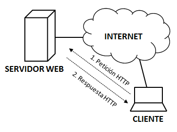
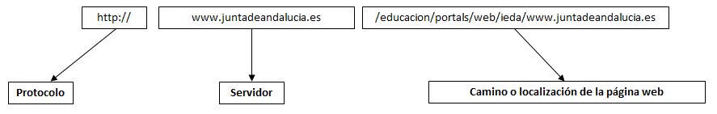
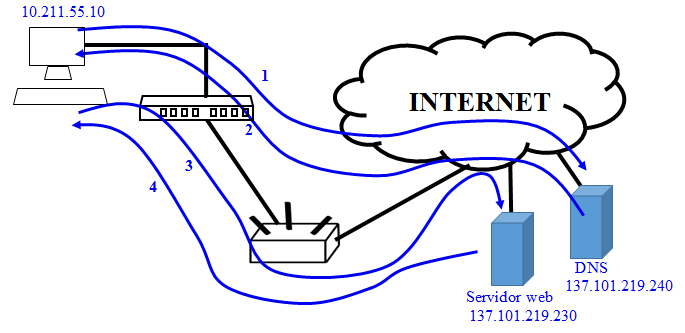

5.5. Protocolo de Transferencia de Hipertexto (HTTP)
HTTP es el protocolo que se utiliza en la red para navegar y que un usuario pueda ver una página web, escrita en HTML, en su navegador. Para ello, mediante HTTP un cliente puede solicitar a un servidor web una determinada página web así como todos los elementos de la misma como pueden ser imágenes u otros elementos multimedia.
El protocolo HTTP es un protocolo de aplicación (recuerda las capas de OSI en la comunicación entre dos ordenadores que se vio en el punto 2.1 de este tema). Esto quiere decir que está montado sobre TCP/IP, que son las capas de transporte y red, respectivamente. Utiliza el puerto 80 de TCP para la creación de conexiones HTTP.
Es muy frecuente confundir HTTP con HTML:
- HTTP es el protocolo para el intercambio de páginas web. Es decir, mediante HTTP se especifica cómo son los mensajes que un cliente y un servidor web pueden intercambiarse para que el servidor le envíe al cliente la página web que este ha solicitado.
- HTML es el lenguaje mediante el cuál se elaboran las páginas web. De hecho, si se abre una página web con el editor de texto, se verá que una página está hecha mediante texto. También aparecen unas marcas que indican cómo presentar ese texto en el navegador.

Diálogo entre cliente y servidor web usando HTTP
Imagen de elaboración propia
Las primeras versiones de HTTP aparecieron en los noventa. No fue hasta 1999, año en el que apareció HTTP/1.1 y que ha supuesto la versión de este protocolo más utilizada hasta el momento. Esta versión, como es normal, mejoraba a las versiones predecesoras pero presenta alguna desventaja:
- Los mensajes del protocolo están creados en texto plano y esto puede traer algún problema con las mayúsculas, minúsculas, espacios en blanco, etc.
- No hacía un uso eficiente del año de banda. Aunque HTTP/1.1 permitía hacer uso de una conexión TCP y a través de ella enviar todos los objetos de una página web, los navegadores usaban un método alternativo para conseguir que las páginas web se cargarán más rápido. Para ello, habrían varias conexiones TCP en paralelo para mejorar la experiencia del usuario a pesar de malgastar recursos.
- Cada mensaje que se envía en este protocolo contiene información repetida. Es información redundante cuya única consecuencia es desaprovechar el ancho de banda.
El protocolo HTTP/2.0 se empezó a utilizar en 2015 y mejoraba diferentes aspectos de su versión anterior:
- Es un protocolo binario para el intercambio de mensajes evitando los problemas del texto plano.
- Mejora el uso del ancho de banda evitando las conexiones en paralelo de HTTP/1.1. Ahora se hace uso de una conexión TCP y sobre ella se pueden enviar varios flujos (el concepto de flujo es nuevo en esta versión del protocolo).
- Mejora el uso del ancho de banda con la compresión de la cabecera de los mensajes, esto quiere decir que se evita enviar en cada mensaje información redundante.
- Mediante este protocolo, el servidor se adelanta a las necesidades del cliente. A esta funcionalidad se le conoce como "server-push". Cuando un cliente solicita el establecimiento de una conexión, mientras esta se establece, el servidor se adelanta y empieza a enviar pequeños mensajes con datos que seguramente solicitará más adelante y que se almacenarán en la caché del cliente. De esta forma, cuando el cliente solicite los contenidos de la página web, gran parte de estos ya estarán en su caché por lo que se mejora el rendimiento de la comunicación.
La mejor forma de entender el funcionamiento de HTTP, es analizando una petición de un cliente de una página web o de un objeto de la misma. Por ejemplo, si abrimos un navegador y escribes el siguiente enlace:
http://www.juntadeandalucia.es/educacion/portals/web/ieda/
{kind=link}
Esta dirección se divide en las siguientes partes:

En la primera parte de la URL, se indica al navegador el protocolo que se va a utilizar. A continuación, se especifica el servidor el cuál contiene la página web. En último lugar, se indica el path o camino donde se encuentra ubicada la página web en el servidor.
En este caso, no se ha indicado la página web (como puede ser index.html) dentro del path o camino. Esto se puede configurar en el servidor web, de forma que se envíe el contenido de una página web aunque en la petición no se indique ninguna.
Un servidor debe tener una dirección IP que lo identifique de forma inequívoca en Internet. Como se acaba de comprobar, en la URL no aparece dirección IP alguna. Esto se hace porque para el usuario es mucho más cómodo recordar nombres que números. Pero entonces, ¿cómo sabe el ordenador del usuario dónde tiene que enviar la petición HTTP? Es aquí donde entra en juego el servidor de nombres o DNS (Domain Name System). El cliente lanza una petición al DNS solicitando la dirección IP de www.juntadeandalucia.es. El DNS responde con la dirección IP que es la que utiliza el ordenador del usuario para poder enviar los datos. Cuando esta petición le llega al servidor, este responderá con el contenido de la página web y que el navegador pueda mostrar la página web al usuario.
Este camino se resume en la siguiente imagen:

Petición de una página web por parte de un cliente a un servidor web
Imagen de elaboración propia
Como se puede comprobar, en los pasos 1 y 2, el ordenador del usuario lanza la petición al DNS para obtener la dirección IP del servidor web. Con esta dirección, puede iniciar el diálogo con el servidor para que este le pueda enviar la página web así como todos los objetos que la contienen y poder representarla correctamente.
Para saber más
¿Qué diferencia hay entre HTTP y HTTPS?
Seguro que has visto en muchas ocasiones que una URL empieza por HTTPS en lugar de HTTP. Es más, es probable que no veas nada, que no se indique el protocolo que estás utilizando pero el navegador. Por ejemplo, en Google Chrome, si escribes una URL empezando por "http://", justo al lado de la misma verás que hay una etiqueta que indica "no seguro". Esto desaparece si la URL empieza por "https://". Haz la prueba con la siguiente dirección:
Comprobarás que en el primer caso, el navegador Chrome muestra la siguiente información:

URL que empieza por "http://"
Imagen de elaboración propia
Mientras que en el segundo caso, se muestra lo siguiente:
URL que empieza por "https://"
Imagen de elaboración propia
HTTPS es un protocolo seguro y se utiliza en Internet cuando los datos que viajan por la red son sensibles o personales, como puede ser un usuario y contraseña o información bancaria. Esta información viaja encriptada en la red por lo que si alguien intercepta los paquetes no va a poder hacer nada con ellos. Solo el origen y del destino de la información serán capaces de descifrar los datos.
Importante
HTTP es el protocolo que se utiliza en la red para navegar y que un usuario pueda ver una página web, escrita en HTML, en su navegador. Mediante HTTP un cliente puede solicitar a un servidor web una determinada página web así como todos los elementos de la misma como pueden ser imágenes u otros elementos multimedia.
La versión actual de este protocolo es HTTP/2.0 que mejora a sus predecesoras sobre todo optimizando el ancho de banda.
Una dirección de una página web está compuesta:
- Protocolo (puede ser http o https).
- Servidor (normalmente es una etiqueta de texto que identifica al servidor como puede ser "www.juntadeandalucia.es").
- Path o camino donde se localiza la página web dentro del servidor.
Cada vez con más frecuencia, es más normal ver el protocolo HTTPS que HTTP. HTTPS es un protocolo seguro y se utiliza en Internet cuando los datos que viajan por la red son sensibles o personales, como puede ser un usuario y contraseña o información bancaria. Esta información viaja encriptada por lo que si alguien intercepta los paquetes no va a poder hacer nada con ellos. Solo el origen y el destino de la información serán capaces de descifrar los datos.